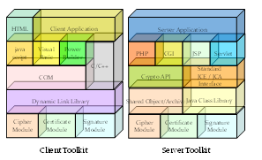

Sécurisation par développements spécifiques
Des développements spécifiques au sein de l’application permettent de remplir les mêmes fonctions qu’un toolkit implanté dans le serveur Web. Dans ce cas, lors de l’édition de l’application, il conviendrait de développer des API qui intègrent des fonctions cryptographiques, ainsi l’application sera en mesure d’assurer elle-même la gestion complète de la session sécurisée ou effectuer exclusivement les contrôles de sécurité non pris en charge nativement par le serveur HTTP.

Une première solution de sécurisation de la messagerie consiste à chiffrer les échanges établis entre 2 serveurs SMTP, en s’appuyant sur la couche de transport sécurisée TLS (RFC 2487). Cette solution présente l’avantage d’être sans impact sur le routage de la messagerie. Cependant, la non-répudiation des messages et l’authentification des utilisateurs ne peuvent être assurées.
Une seconde solution, éventuellement complémentaire à la première, passe par l’ajout d'un toolkit sur le client de messagerie de l’émetteur et du destinataire.
Cet ajout s’avère nécessaire pour les clients ne disposant pas de client S/MIME intégré, tels que MS-Outlook 97, ou pour implémenter la version 3.0 de S/MIME dans le cas des clients S/MIME version 2.0. De tels toolkit sont actuellement disponibles pour les systèmes de messagerie MS-Outlook 97/98, Outlook Express et Lotus Notes. Ils permettent ainsi de chiffrer et de signer un message à l’aide du protocole standardisé S/MIME v2 ou v3 suivant les offres, avec consultation, dans le cas de S/MIME v3, d’une liste de révocation locale, via des mécanismes de cache, ou distante via une interrogation de l’infrastructure de confiance PKI.
Si dans ce cas, les messages sont signés et chiffrés de bout en bout, interdisant ainsi toute lecture de messages par les administrateurs, elle présente néanmoins un désavantage : elle s’oppose à la mise en œuvre des solutions de filtrage du contenu des messages ou de détection des virus.
Pour pallier cette difficulté, la mise en place d’une passerelle S/MIME en coupure est envisageable. Le principe consiste à chiffrer et/ou à signer les messages sortants au niveau de la passerelle. Cette approche évite le déploiement des clients S/MIME sur chaque poste de travail en centralisant la gestion des clés S/MIME au niveau de la passerelle.